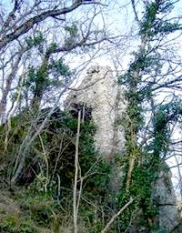
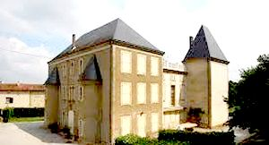
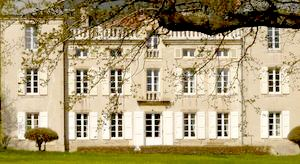
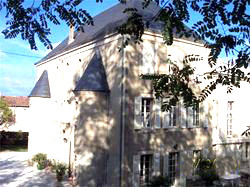
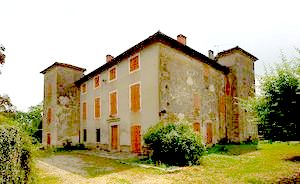
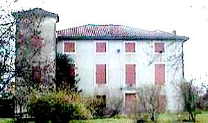
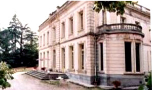
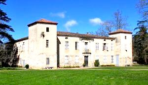
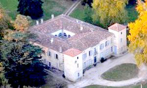

Recensement Jean-Claude Truffet
| Département | 81 — Tarn |
| Canton | Saix |
| Commune | Lempaut |
| Type d'édifice | Château |
| Période d'origine | XV-XVIII |









Cinq châteaux à Lempaut, celui de la Bousquétariè du XIXe siècle, celui de Devèze du XV-XVIe siècle deux tours carrées, de Montpeyroux , de Padiès (voir article), celui de la Rode du XVIe siècle, la villa les Pins avec article de Padiès et les vestiges de Rochefort. BOUSQUETARIE (la), au milieu d'une belle nature, le château est un joli morceau d'architecture. Il fut élevé au début du XIXe siècle par les ancêtres des propriétaires actuels, mais aucun document d'archives n'a malheureusement été conservé qui pourrait nous renseigner sur son l'histoire, chambres d'hôtes par la famille Sallier. DEVEZE, au début du XVIIIe siècle il est utilisé par le parti du traditionnel "repaire seigneurial" tel que la guerre de cent ans le répandit à travers toute la France, à l'image d'exemple proches du château de Padiès. Il appartenait à la famille Rotolp, en effet, en 1737 Geoffroi-Louis de Falguerolles, seigneur de Gandels, né en 1712, épousa Louise de Rotolp de La Devèze, dame de Lempaut et Saint-Germain. RODE, ancienne abbaye royale nichée au pied de la montagne noire depuis 1580, le château de La Rode de madame Violaine Geli. MONTPEYROUX, ancienne demeure chambres d'hôtes de la famille Sallier. Villa les PINS Chambres d'hôtes de style italien du XXe siècle de la famille Delbreil, villa des Pins d'inspiration néo-classique, pas d'information historique. Rochefort, vestiges de l'ancien château de Lempaut pas d'information historique.
La Bousquétariè; de profondes interventions menées dans la seconde moitié du XIXe siècle sur les balustrades, les frontons, la galerie le long du toit, les encadrements des fenêtres de la façade arrière et l'occuli des tours. la simplicité du profil général du bâtiment, son plan et la sobriété de son élévation, pourraient trahir une construction plus ancienne, remontant peut-être à la fin du XVIIe ou au début du XVIIIe siècle ainsi le château n'aurait été que modifié au début du XIXe siècle. Devèze, construit au XVe siècle et fortement modifié au siècle suivant, ce beau château apparaît comme une demeure très simple adoptant le parti défensif. Corps de logis rectangulaire à deux étages flanqué de deux tours carrées placées en diagonale, Sous les plaques d'enduit à moitié effritées apparaît une belle construction de brique. La Rode, vieilles demeures authentiques qui ont su garder leur âme et leur charme dantan tout en offrant dans leurs chambres le confort daujourdhui. Dans un cadre hors du temps ! Prieuré cistercien datant de la fin du XVIe siècle, remanié après la Révolution, en maison de maître. Vestiges de Rochefort, construit au XVIe siècle, apparaît comme une simple demeure ayant adopté le même parti défensif. PINS, villa des Pins sous lequel est connu plus couramment ce joli petit château, convient beaucoup mieux aux dimensions intimistes de ce beau morceau d'architecture de la fin du XIXe siècle, d'inspiration néo-classique. La façade se compose d'un rez-de-chaussée et d'un étage et comprend sept travées. Les fenêtres des deux niveaux ont été traitées avec une grande simplicité, la seule animation est donnée par les chaînages d'angle de pierre, des chaînages plus larges flanquant la travée centrale. Le haut de ces chaînages de pierre encadrant la travée centrale est enrichie de deux paires de consoles. Le toit est dissimulé derrière une balustre tendant à donner au château un aspect plus urbain.
Famille Sallier Famille Rotolp Famille Delbreil
"
Vestiges de Rochefort à Lempaut, château de la Bousquetariè, de la Devèze, de Rode, de Monpeyroux et la villa les Pins